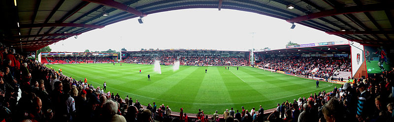

AFC Bournemouth is a professional association football club based in Kings Park, Boscombe, a suburb of Bournemouth, Dorset, England. They compete in the Premier League, the top tier of English football. Formed in 1899 as Boscombe, the club adopted their current name in 1971. Nicknamed "The Cherries", and commonly referred to as Bournemouth, they have played their home games at Dean Court since 1910.
The club competed in regional football leagues before going up from the Hampshire League to the Southern League in 1920. Now known as Bournemouth & Boscombe Athletic, they were elected into the Football League in 1923. They remained in the Third Division South for 35 years, winning the Third Division South Cup in 1946. Placed in the newly reorganised Third Division in 1958, they suffered relegation in 1970, but would win an immediate promotion in 1970–71. Relegated back into the Fourth Division in 1975, Bournemouth were promoted again in 1981–82 and after lifting the Associate Members' Cup in 1984 would go on to win the Third Division title in 1986–87. They spent three seasons in the second tier but entered administration in 1997 and ended up back in the fourth tier with relegation in 2002, though immediately gained promotion by winning the play-offs in 2003.
Bournemouth entered administration for a second time and were relegated back into League Two in 2008, but ended the year by appointing Eddie Howe as manager. Under Howe's stewardship, Bournemouth won three promotions in six years to win a place in the first tier of English football for the first time in their history. This was achieved with a second-place finish in League Two in 2009–10, a second-place finish in League One in 2012–13 and a Championship title in 2014–15. The club remained in the Premier League for five seasons before suffering relegation in 2020, but they returned in 2022 as Championship runners-up, this time under the management of Scott Parker.
List Content
History
Boscombe
Although the exact date of the club's foundation is not known, there is proof that it was formed in the autumn of 1899 out of the remains of the older Boscombe St. John's Institute Football Club. The club was originally known as Boscombe Football Club. The first president was Mr. J. C. Nutt.
In their first season, 1899–1900, Boscombe competed in the Bournemouth and District Junior League. They also played in the Hants Junior Cup. During the first two seasons, they played on a football pitch in Castlemain Avenue, Pokesdown. From their third season, the team played on a pitch in King's Park. In the 1905–06 season, Boscombe graduated to senior amateur football.
In 1910, the club was granted a long lease over some wasteland next to Kings Park as the club's football ground by local businessman J.E. Cooper-Dean. With their own ground, named Dean Court after the benefactor, the club continued to thrive, and dominated the local football scene. The same year the club signed its first professional player Baven Penton.
Around about this time, the club obtained their nickname "The Cherries". There are two leading explanations of how the club gained the nickname: from the cherry-red striped shirts that the team played in, and, perhaps less plausible, because Dean Court was built adjacent to the Cooper-Dean estate, which, it is believed, may have contained many cherry trees.
For the first time, during the 1913–14 season, the club competed in the FA Cup. The club's progress, however, was halted in 1914 with the outbreak of World War I, and Boscombe returned to the Hampshire League.
In 1920, the Third Division of the Football League was formed, and Boscombe were promoted to the Southern League, finding moderate success.
Bournemouth & Boscombe Athletic
To make the club more representative of the district, the name was changed to Bournemouth & Boscombe Athletic Football Club in 1923. During the same year, the club was elected to the newly expanded Third Division South. The first league match was at Swindon Town on 25 August 1923, which Bournemouth lost 3–1. The first league game at Dean Court was also against Swindon, where Bournemouth gained their first league point after a 0–0 draw.
Bournemouth struggled in the Football League but eventually established themselves as a Third Division club. Bournemouth remains on the records as the longest continuous members of the Third Division.
As a league club, Bournemouth had to wait until after the Second World War before winning their first trophy. This was accomplished as they beat Walsall in the Third Division (South) Cup in the final at Stamford Bridge.
AFC Bournemouth
The club adopted the name AFC Bournemouth for the start of the 1971–72 season, with the intention that the club would appear first in alphabetical lists of English clubs. A year later, the club adopted a new badge as a symbol of its progress. The stripes in the background were based on the club shirt, while in the foreground is the profile of a player heading the ball, in honour of Dickie Dowsett, a prolific scorer for the club in the 1950s and 1960s.
The team's red-and-black kit, introduced in 1971, was based on the AC Milan strip. This was the era of Ted MacDougall, a prolific goalscorer who, in an FA Cup tie in November 1971, scored nine goals in an 11–0 win against Margate.
Late 20th century
Bournemouth recorded a famous victory over holders Manchester United in the FA Cup in January 1984, while they were managed by Harry Redknapp. The club won its second piece of silverware by winning the Associate Members' Cup in its inaugural season, beating Hull City 2–1 at Boothferry Park on 24 May 1984 in the final.
Redknapp took Bournemouth into the second tier of the English league for the first time in their history as Third Division champions in 1987. After comfortably surviving in their first season in the Second Division, Bournemouth made a serious challenge for promotion to the top flight in the 1988–89 season they ultimately fell away after a poor run late in the season, but their eventual finish of 12th place remained their highest-ever in the Football League until the 2013–14 season.
On 5 May 1990, the final day of the 1989–90 season, Leeds United had the chance to win the Second Division and gain promotion into the First Division by beating Bournemouth at Dean Court. Some United fans had already caused trouble in the town during the morning and the atmosphere was tense as Leeds won the match by a single goal. Combined with the results of other matches, this meant that Leeds were promoted while Bournemouth were relegated. The violence and destruction by visitors to Bournemouth continued over the holiday weekend, causing more than £1 million worth of damage and injury to opposing fans and police officers. The town's Daily Echo newspaper reported that "spectators, including many young children, had to run to safety as missiles were hurled and riot police waded in to control the crowds." The matter was raised in Parliament by one of the town's MPs. Financially, the Leeds trouble affected the club for more than a decade, as Bournemouth were prevented by local police from staging home games on Bank Holidays (traditionally a popular day for football) until a game against Shrewsbury Town on 21 April 2003.
Redknapp remained at the club for two more seasons, both of which ended with the club falling three points short of the play-offs. However, mounting financial pressures caused him to resign his position at the end of the 1991–92 season, and he subsequently re-joined former club West Ham United as a coach. He was replaced by Tony Pulis, who built a much cheaper squad that could only manage two consecutive 17th-place finishes before Pulis walked out of the club, blaming financial pressures.
Bournemouth went the first few months of the 1994–95 season without a permanent manager in place, and a dreadful start saw them bottom of the table for much of the first half of the season. Despite a minor upturn in form when Mel Machin was appointed as manager, they looked highly unlikely to survive, given that there were five relegation spots in Division Two for that season due to league reconstruction. However, a late run of form combined with collapses by relegation rivals Cambridge United and Plymouth Argyle saw them survive on the last day of the season by two points.
Machin ultimately remained in charge for six years, most of which were marked by unremarkable mid-table finishes. The 1998–99 season proved to be arguably the highlight of his tenure, with the club making a serious playoff challenge for most of the season, but ultimately falling short and finishing seventh. However, a drop to 16th place in the 1999–2000 season followed by a poor start to the following season saw Machin removed from his position and given the role of director of football.
Early 21st century
Sean O'Driscoll was promoted from the coaching staff in place of Mel Machin at the start of the 2000–01 season. In O'Driscoll's first season as manager, Bournemouth narrowly missed out on the Division Two playoffs but were relegated a year later in the new stadium (in the early part of the 2001–02 season, they played their home matches at Dorchester Town's ground while their own stadium was being redeveloped). The board kept faith in O'Driscoll and they were rewarded with promotion via the Division Three playoffs in 2002–03. The club became the first to score five goals at the Millennium Stadium when they beat Lincoln City 5–2 in the 2002–03 Division Three play-off final with goals from Steve Fletcher, Carl Fletcher, Stephen Purches and Garreth O'Connor. Under O'Driscoll, Bournemouth narrowly missed out on the play-offs for the 2003–04 and 2004–05 seasons, and just avoided relegation in the 2005–06 season.
Long-serving player James Hayter scored the fastest league hat-trick in English Football League history during the 2003–04 season. The Cherries were leading 3–0 against Wrexham thanks to goals from Stephen Purches, Warren Cummings and Warren Feeney when Hayter was brought onto the field as a substitute. With 86 minutes gone, Hayter managed to net three goals in the space of two minutes and 21 seconds, making the final score 6–0 to Bournemouth.
In September 2006, with the team in eighth in the League, Sean O'Driscoll left to become manager of Doncaster Rovers. He was replaced by Kevin Bond.
Decline and administration (2008–2009)
In February 2008, Bournemouth were forced into administration, suffering a ten-point deduction which put them in relegation trouble. Bournemouth had debts of around £4 million and almost went out of business. The off-field uncertainty continued throughout the season, with only one, ultimately unsuccessful, bid for the club accepted, and the club ended the season being relegated to League Two.
Ahead of the 2008–09 season, the team's future in the Football League was put into doubt when the league threatened to block Bournemouth's participation in League Two, due to problems with the club's continuing administration and change in ownership. The league ordered both Bournemouth and Rotherham United to demonstrate that they could fulfil all of their fixtures and find a way out of administration, eventually allowing the club to compete with a 17-point penalty for failing to follow the Football League insolvency rules. The new company was also ordered to pay unsecured creditors the amount offered at the time of the original CVA (around ten pence in the pound) within two years.
Early into the season, manager Bond was sacked and was replaced by former player Jimmy Quinn, who would himself leave the club only a few months later. Former player Eddie Howe took over as manager with the club still ten points adrift at the bottom of the league and initially on a caretaker basis, becoming the youngest manager in the Football League at the age of 31.
At the end of 2008, it was announced that local businessman Adam Murray had completed the purchase of 50% of the club's shares from previous chairman, Paul Baker. However, in January 2009, Murray missed the deadline to buy Baker's shares.
In the final home game of the 2008–09 season, the Cherries guaranteed their Football League status by beating Grimsby Town 2–1 with a winning goal ten minutes from time by Bournemouth's Steve Fletcher, sparking wild celebrations after a fairytale ending to "The Great Escape." They finished their troubled season with their best away win in 30 years with a 4–0 victory at Morecambe.
In June 2009, a consortium including Adam Murry finally took over Bournemouth. The consortium included Jeff Mostyn, former vice-chairman Steve Sly, Neill Blake and former Dorchester Town chairman Eddie Mitchell.
Rise to the Premier League (2009–2015)
Howe's first full season in charge brought success as Bournemouth finished second in League Two to earn promotion with two games to spare. Howe subsequently left the club for Burnley during the following season his successor, another former Bournemouth player, Lee Bradbury, led Bournemouth to the League One play-offs. The two-legged semi-final against Huddersfield Town finished 3–3 after extra time, and Huddersfield went through the final by winning the penalty shoot-out 4–2. Bradbury was unable to lead Bournemouth to another promotion challenge in the 2011–12 Football League One, placing 11th after a season of indifferent results, and was replaced by youth team coach Paul Groves for the final games of the season.
Groves remained in charge at the start of the 2012–13 season, only to be sacked in October 2012 following a start which left the club near the bottom of the table. Eddie Howe returned as manager, and not only did he pull the club away from their early-season relegation battle, they achieved promotion to the Championship, returning to the second-tier of English football for the first time since 1990. The club also revealed a new club crest. After a promising start to life in the Championship, the club was handed a fourth Round FA Cup tie with Premier League club Liverpool which ended in a 2–0 loss. Bournemouth finished their first season back in the Championship in tenth place, their highest ever position in the Football League.
On 25 October 2014, Bournemouth won 8–0 away at St. Andrew's against Birmingham City. It was the first time that the Cherries had ever scored eight goals in a league game and their largest winning margin in the league (not counting a 10–0 win over Northampton Town in September 1939, which was discounted after the league was abandoned due to the Second World War). The club followed up this success with a 2–1 victory over Premier League side West Bromwich Albion in the League Cup, reaching the quarter-finals of the competition for the first time. Bournemouth were again drawn against Liverpool but lost 3–1. The club spent most of the 2014–15 season near the top of the table, and a 3–0 win away at Charlton Athletic on the final day of the season was enough to clinch the Championship title and a first-ever promotion to the top flight of English football.
First Premier League era (2015–2020)
In Bournemouth's first season in the Premier League, the team was beset by a number of crippling injuries, including to Callum Wilson, star striker from the previous season. The team struggled for most of the first half of the season but an upturn in form during the second half of the season saw a reversal of fortunes. Bournemouth eventually finished 16th in the league, avoiding relegation.
The club was widely tipped to suffer second season syndrome, but the 2016–17 season was largely successful. Despite a weak start, which saw them in the relegation zone for the first three weeks, the team quickly recovered and went on to finish 9th. Star loan player Nathan Aké was signed permanently from Chelsea for a club-record fee in June 2017, reportedly in the region of £20 million. Despite another slow start in 2017–18, a run of good form through late December and January saw them steer clear of the relegation zone, and earn Howe his second Premier League Manager of the Month award. Bournemouth went on to gain 19 points from losing positions in the second half of the season – a Premier League record – helping the team finish in 12th place.
The 2018–19 season saw the club break their transfer record again on Jefferson Lerma during the summer, and contrasting with the previous season, the club had a strong start, sitting in 6th place after the first 12 games. However, their form regressed for the remainder of the season due to many injury problems. In the end, Bournemouth finished in 14th place, securing a 5th season in the Premier League.
A bright start to the 2019–20 season saw the team sitting in 7th place at the beginning of November. However, continuing injury problems and a poor run of results followed, and the club dropped into the relegation zone in January. Poor performances continued after the COVID-19 pandemic had interrupted the season, with key losses to Manchester City and Southampton putting the club on the brink. Despite a 3–1 victory over Everton away at Goodison Park on the final day, the club's relegation was confirmed because Aston Villa drew against West Ham. On 1 August 2020, Howe left the club by mutual consent, ending his 8-year second spell as manager.
Relegation, promotion, managerial changes and new ownership (2020–)
On 8 August, Jason Tindall, a former Bournemouth player and Howe's longtime assistant, was promoted to manager. Despite sitting second in mid-December, Tindall was sacked on 3 February 2021 after a run of only 1 win in 8 games, which saw the team fall to 6th in the table. He was replaced by first team coach Jonathan Woodgate, initially as caretaker. Woodgate would remain as manager for the remainder of the season, as the club finished the season in 6th and entered the playoffs, but lost 3–2 to Brentford on aggregate in the semi-final. Woodgate's contract was not renewed after the season and on 28 June 2021, former Fulham manager Scott Parker was appointed as the new head coach, with Matt Wells as the assistant coach. Parker led the club to an impressive start, going 15 games unbeaten to start the 2021–22 Championship season, going on to clinch promotion in the penultimate match of the season, a 1–0 victory against promotion rivals Nottingham Forest.
The club's return to the Premier League got off to a difficult start, however, as a breakdown in the relationship between Parker and the club and a Premier League record-equalling 9–0 defeat to Liverpool at Anfield resulted in Parker's dismissal after just four league games on 30 August 2022. First team coach Gary O'Neil was made interim head coach and presided over an upturn in form in his 12 games in interim charge before being appointed as the permanent head coach on 27 November 2022.
On 13 December 2022, the club was purchased from previous owner Maxim Demin by Black Knight Football Club, a partnership led by American businessman Bill Foley and Cannae Holdings. The minority ownership group is led by Hollywood actor Michael B. Jordan and Kosmos Founder Nullah Sarker. On 19 June 2023, the club announced the departure of manager O'Neil, with Andoni Iraola coming in to replace him. In the 2023–24 season, Bournemouth, led by Iraola, achieved their best points tally in the Premier League, accumulating 48 points.
Kit suppliers and Shirt sponsors
| AFC Bournemouth Kits | |||||
|---|---|---|---|---|---|
| Period | Kit manufacturer | Shirt sponsor (chest) | Shirt sponsor (sleeve) | Short sponsor (back) | Short sponsor |
| 1886-1930 | Unidentified | None | None | None | None |
| 1978–1980 | Adidas | ||||
| 1980–1981 | Reg Heynes Toyota | ||||
| 1981–1982 | In-House | ||||
| 1982–1983 | Osca | None | |||
| 1983–1985 | Umbro | Reg Heynes Toyota | |||
| 1985–1986 | Coopers Beers | ||||
| 1986–1987 | Hensons | ||||
| 1987–1988 | Scoreline | Canberra Homes | |||
| 1988–1989 | Nolan | ||||
| 1989–1990 | None | ||||
| 1990–1992 | Ellgren | A1 Windscreens | |||
| 1992–1994 | Matchwinner | Exchange & Mart | |||
| 1994–1995 | Frizzell | ||||
| 1995–1996 | Le Coq Sportif | ||||
| 1996–1997 | Patrick | ||||
| 1997–2000 | Seward Cars | ||||
| 2000–2001 | Super League | ||||
| 2001–2003 | TFG Sports | ||||
| 2003–2006 | Bourne Red | ||||
| 2006–2008 | Focal Point Fires | ||||
| 2008–2011 | Carbrini Sportswear | Carbrini Sportswear | JD Sports | JD Sports | |
| 2011–2012 | Fila | Focal Point Fires | Focal Point Fires | None | |
| 2012–2014 | Energy-Consulting | Energy-Consulting | |||
| 2014–2015 | Carbrini Sportswear | ||||
| 2015–2017 | JD Sports | MansionBet | None | ||
| 2017–2019 | Umbro | MansionBet | |||
| 2019–2020 | MansionBet / Vitality | ||||
| 2020–2021 | MSP Capital | None | DWP Housing Partnership | United Pallet Network | |
| 2021–2022 | QuinnBet | ||||
| 2022–2024 | Dafabet | DeWalt | None | None | |
| 2024– | bj88 | LEOS International | |||
Stadiums
Dean Court, currently known as Vitality Stadium for sponsorship purposes, is a football stadium in Boscombe, a suburb of Bournemouth, Dorset, England, and is the home ground of AFC Bournemouth. The stadium has a capacity of 11,307.
In 1910, Boscombe were given a piece of land by the town's Cooper-Dean family, after whom the ground was named. The land was the site of an old gravel pit, and the ground was not built in time for the start of the 1910–11 season. As a result, the club played at the adjacent King's Park until moving into Dean Court in December 1910. However, the club facilities were still not ready, and players initially had to change in a nearby hotel. Early developments at the ground included a 300-seat stand.
In 1923, the club were elected to Division Three South of the Football League, at which point they changed their name to Bournemouth & Boscombe Athletic. The first Football League match was played at Dean Court on 1 September 1923, with 7,000 watching a 0–0 draw with Swindon Town. Subsequent ground improvements were made following the purchase of fittings from the British Empire Exhibition at Wembley, which allowed the construction of a 3,700-seat stand. A covered terrace was added at the southern end of the ground in 1936.
The ground was completely rebuilt in 2001, with the pitch rotated ninety degrees from its original position and the ground moved away from adjacent housing. Because the work was not finished in time for the start of the 2001–02 season, Bournemouth played their first eight games at the Avenue Stadium in Dorchester. When Dean Court reopened with a game against Wrexham on 10 November, it gained its first sponsored name, becoming the Fitness First Stadium. Although it was rebuilt as a three sided stadium with a capacity of 9,600, seats were placed on the undeveloped south end in the autumn of 2005. On 24 February 2004 Bournemouth's James Hayter scored the Football League's fastest-ever hat-trick at Dean Court, scoring three goals in 2 minutes and 20 seconds during a 6–0 victory over Wrexham. The club sold the stadium in December 2005 in a sale-and-leaseback deal with London property company Structadene.
In August 2014, chairman Jeff Mostyn revealed that the club were looking at the possibility of redeveloping the stadium rather than moving to Matchams. With a limited capacity of 11,464 (considered small even for a League One/Tier 3 club, and until the promotion of Luton Town FC in 2023, the smallest in the Premier League's history), the club were exploring the option of building a new, permanent stand and filling in the stadium's corners, bringing the total seating to around 14,000, should they continue to be successful in the Premier League. The naming rights changed once more in July 2015 when the stadium became the Vitality Stadium.
In May 2016, Bournemouth announced that they would not be adding new capacity to its ground in time for the next Premier League season. The club has taken the decision to delay redevelopment plans following a meeting of its board. A statement from the Cherries blamed "ongoing negotiations with the club's landlord to purchase the stadium". The club had previously said improving the stadium's size was needed as "demand for tickets far outweighs our current capacity". Dean Court was the smallest ground in the Premier League.
In December 2016 the club announced plans to find a new site due to the ongoing issues regarding ownership of the ground.
In July 2017 the club confirmed it was looking to build a new stadium near the current site in Kings Park.
In February 2022, the stadium was damaged by Storm Eunice, an unusually intense storm. It caused an EFL Championship game against Nottingham Forest, scheduled for 18 February, to be postponed.
A panorama of the Dean Court before a match
Honours
| AFC Bournemouth honours | |||
|---|---|---|---|
| Type | Competition | Titles | Seasons |
| Domestic | Second Division/Championship | 1 | 2014–15 |
| Third Division South / Third Division / League One | 1 | 1986–87 | |
| Associate Members' Cup / Football League Trophy | 1 | 1983–84 | |
| Third Division South Cup | 1 | 1945–46 |
Players
First-team squad
| No. | Pos. | Nation | Player |
|---|---|---|---|
| 2 | Def | Espanyol | Dean Huijsen |
| 3 | Defender | Hungary | Milos Kerkez |
| 4 | Midfield | England | Lewis Cook (vice-captain) |
| 5 | Defender | Argentina | Marcos Senesi |
| 7 | Midfield | Wales | David Brooks |
| 8 | Midfield | England | Alex Scott |
| 9 | Forward | Brazil | Evanilson |
| 10 | Midfield | Scotland | Ryan Christie |
| 11 | Midfield | Burkinabé | Dango Ouattara |
| 12 | Midfield | USA | Tyler Adams |
| 13 | GoalKeeper | Espanyol | Kepa Arrizabalaga (on loan from Chelsea) |
| 15 | Defender | England | Adam Smith (captain) |
| 16 | Midfield | England | Marcus Tavernier |
| 17 | Midfield | Colombian | Luis Sinisterra |
| 19 | Forward | Netherlands | Justin Kluivert |
| 20 | Defender | Argentina | Julio Soler |
| No. | Pos. | Nation | Player |
|---|---|---|---|
| 21 | Forward | England | Daniel Jebbison |
| 22 | Defender | Mexico | Julián Araujo |
| 23 | Defender | England | James Hill |
| 24 | Forward | Ghana | Antoine Semenyo |
| 26 | Forward | Turkey | Enes Ünal |
| 27 | Defender | Ukraine | Illya Zabarnyi |
| 35 | Defender | Wales | Owen Bevan |
| 40 | GoalKeeper | England | Will Dennis |
| 43 | Forward | England | Zain Silcott-Duberry |
| 44 | Forward | England | Daniel Adu-Adjei |
| 45 | Defender | USA | Matai Akinmboni |
| 46 | GoalKeeper | Scotland | Callan McKenna |
| 47 | Midfield | England | Ben Winterburn |
| 48 | Defender | England | Max Kinsey |
| 49 | Defender | England | Dominic Sadi |
| 51 | Forward | England | Remy Rees-Dottin |
Management and staff
Current staff
| Position | Name |
|---|---|
| Manager | Andoni Iraola |
| Assistant coaches | Albert Stuivenberg |
| Tommy Elphick | |
| Shaun Cooper | |
| Pablo de la Torre | |
| Goalkeeping coach | Neil Moss |
| Academy manager | Sam Gisbourne |
| Head of sports medicine and performance | Jay Mellette |
| Managing director | Tiago Pinto |
| Chief commercial officer | Juliet Slot |
| Chief financial officer | Jim Frevola |
| Director of football operations | James King |
Bournemouth board
| Position | Name |
|---|---|
| Co-chair | Jim Frevola |
| Co-chair | Simon Francis |
| Executive Vice-chair | Tiago Pinto |
| Director | Bill Foley |